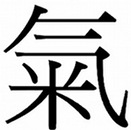
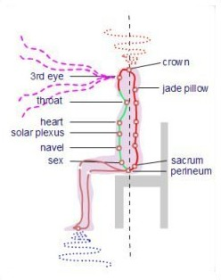
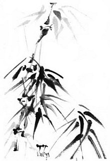

Qi
Qi, is energy.
From coarse (physical things, atmosphere) to the very subtle (beyond the ethereal).

Taoism
Taoism is ..?
(Tao=way, ism = practice / principles)
The Tao=The way to .....? (advancement)
As I best understand it.... (translations vary, and words are misinterpreted)
It's not a religion, more like, a blueprint to evolve.
Apparently originating from the actions and writings (under duress) of Lao Tzu.
(or credited to him because he was the first one able to write it).
Lao Tzu wrote the "Tao Te Ching" sometime between 6 BC and 3 BC.
It is poetic in style, concise and contains many layers of detailed insight.
His later work, the "Hua Hua Ching", contains more specific information on energetic
interactions. (see reading list for details).
Taoism realises that everything is connected, the planets, the elements and all the living
things. (from the very big to the very small (subtle)). "Strings"?
***EDIT Common elemental forces and attributes that link everything in the cosmos are "grouped" into general categories, and a methodology the benificially harnessing of them ****** .
By connecting to these forces through Meditation and Taoist practices such as Qi Gong
(energy work), Tai Qi Chuan (the way energy practice) and Internal Alchemy one is
able to increase physical and subtle energy levels and build a strong platform for spiritual
development.
Simplistically it is like connecting the positive (heaven) and negative (earth)
electric leads to give power.
Grounding and rootedness to the earth is the launch pad to the spiritual.
The more grounded you become the subtler the energies you experience.
The subtler the energies you absorb, the stronger you become. Spiritual development is a
natural outcome. Nothing is forced because you have a firm foundation.
"The way that can be spoken of
is not the constant way.
The name that can be named
is not the constant name.
The nameless was the beginning
of heaven and earth.
The named was the mother
of the myriad creatures."
Lao Tzu.
Tao Te Ching.
Absorption
The diagram illustrates the main subtle forces that effect us. We absorb these forces
naturally to sustain life.
Heaven energy.
Experienced as a warm energy spiralling down from the heavens. It is the effect of planetary
movement upon us and is Yang in quality.
Cosmic Particle Dust.
Primarily absorbed through a spot in the middle of the forehead ( third eye chakra). Contains
unlimited information.
Earth Force.
Experienced as a cool energy spiralling up from the earth. The healing quality comes from the
special relationship between the earth and the moon. Yin in quality.

The Microcosmic Orbit
With practice, one can develop the circulation of Qi around the Microcosmic Orbit to great
personal benefit. The greater the circulation the more easily external energy is drawn into
the cycle and the stronger one becomes.
I do suggest that you should clear your channels (correct vertical structural alignment)
sufficiently to be able to fully feel the energies before circulating. You will know when.
There are many sources of information available which will give you instruction on the
practice of circulating internal Qi.
I would recommend you look at the work of Mantak Chia (see reading list) as he provide
perhaps the most comprehensive explanations of Chinese Metaphysics and Taoist practices
(Alchemy, Qi Gong) available in English.
Governor channel runs up the middle of the back.
Functional channel runs down the chest.
(Connecting the two channels is achieved by pressing the tongue to the top of the palate and pulling up the anus).

"Comment"
Feng Shui practice considers the way that humans are effected by the subtle forces, it can help to improve ones relationship with the environment.
NB. for anyone learning about Feng Shui, the realization that we connect to the source just by being aware that it is there. i.e..If we look to the stars , we are connected. If we look to the stars with awareness we are conscious. It is easy in modern urban life to lose perspective of the greater picture. If you live in a small flat in a large city it is not that easy to remember that there is earth below you, stars above, and creatures and plants .
Using and/or the study of Feng Shui is a very good way to reconnect and be reminded of the cycle of things.
